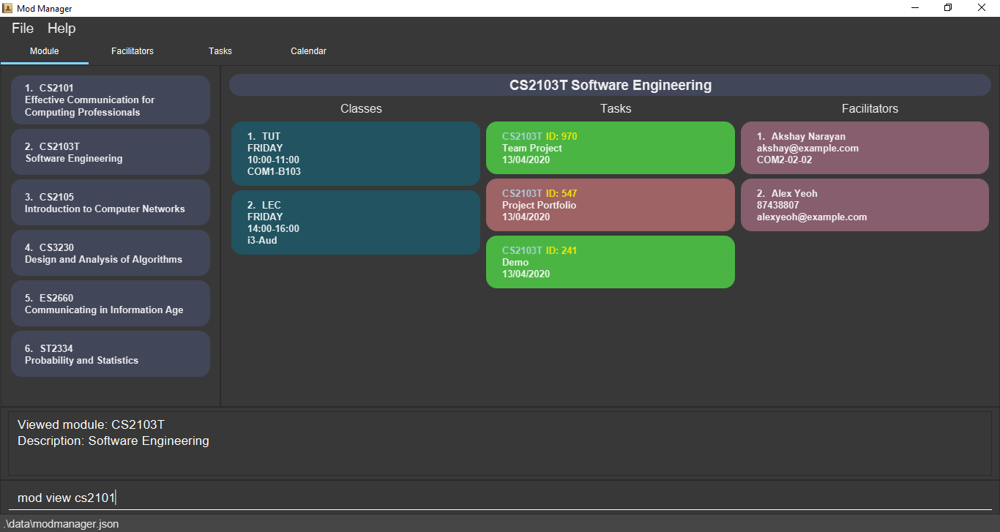

By: Team AY1920S2-CS2103T-F10-4 Since: Jan 2020 Licence: MIT
1. Introduction
Mod Manager is for those who prefer to use a desktop app for managing tasks for modules in a semester. More importantly, Mod Manager is optimized for those who prefer to work with a Command Line Interface (CLI) while still having the benefits of a Graphical User Interface (GUI). If you can type fast, Mod Manager can get your management of tasks done faster than traditional GUI apps. Interested? Jump to the Section 2, “Quick Start” to get started. Enjoy!
2. Quick Start
-
Ensure you have Java
11or above installed in your Computer. -
Download the latest
modmanager.jarhere. -
Copy the file to the folder you want to use as the home folder for your Mod Manager.
-
Double-click the file to start the app. The GUI should appear in a few seconds.
 -
Type the command in the command box and press Enter to execute it.
e.g. typinghelpand pressing Enter will open the help window. -
Refer to Section 3, “Features” for details of each command.
3. Features
Command Format
-
Words in
UPPER_CASEare the parameters to be supplied by the user. -
Items in square brackets are optional. Items in curly brackets are mutually exclusive.
-
Items with
… after them can be used multiple times including zero times. -
Parameters can be in any order.
3.1. Viewing help : help
Opens up the help window that displays a link to the user guide.
Format: help
3.2. Managing modules : mod
Adds a person to the address book
Format: add n/NAME p/PHONE_NUMBER e/EMAIL a/ADDRESS [t/TAG]…
| A person can have any number of tags (including 0) |
Examples:
-
add n/John Doe p/98765432 e/johnd@example.com a/John street, block 123, #01-01 -
add n/Betsy Crowe t/friend e/betsycrowe@example.com a/Newgate Prison p/1234567 t/criminal
3.3. Managing classes : class
Shows a list of all persons in the address book.
Format: list
3.4. Managing tasks : task
Edits an existing person in the address book.
Format: edit INDEX [n/NAME] [p/PHONE] [e/EMAIL] [a/ADDRESS] [t/TAG]…
Examples:
-
edit 1 p/91234567 e/johndoe@example.com
Edits the phone number and email address of the 1st person to be91234567andjohndoe@example.comrespectively. -
edit 2 n/Betsy Crower t/
Edits the name of the 2nd person to beBetsy Crowerand clears all existing tags.
3.5. Managing facilitators : facil
Finds persons whose names contain any of the given keywords.
Format: find KEYWORD [MORE_KEYWORDS]
Examples:
-
find John
ReturnsjohnandJohn Doe -
find Betsy Tim John
Returns any person having namesBetsy,Tim, orJohn
3.6. Managing calendar : cal
3.6.1. Viewing calendar for current week
Shows the calender for the current week.
Format: cal view /week this
3.6.2. Viewing calendar for next week
Shows the calendar for next week.
Format: cal view /week next
3.6.3. Finding empty slots
Finds empty slots in the calendar.
Format: cal find /type empty
3.7. Listing commands : command
Clears all entries from the address book.
Format: clear
3.9. Exiting the program : exit
Exits the program.
Format: exit
3.10. Saving the data
Address book data are saved in the hard disk automatically after any command that changes the data.
There is no need to save manually.
4. FAQ
Q: How do I transfer my data to another Computer?
A: Install the app in the other computer and overwrite the empty data file it creates with the file that contains the data of your previous Mod Manager folder.
5. Command Summary
Calendar cal:
-
cal find /type empty -
cal view /week next -
cal view /week this
Class : class
Command : command
Exit : exit
Facilitator : facil
Help : help
Module : mod
Task : task